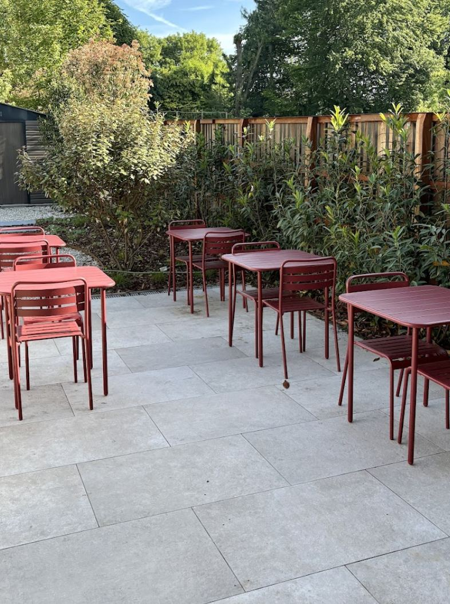
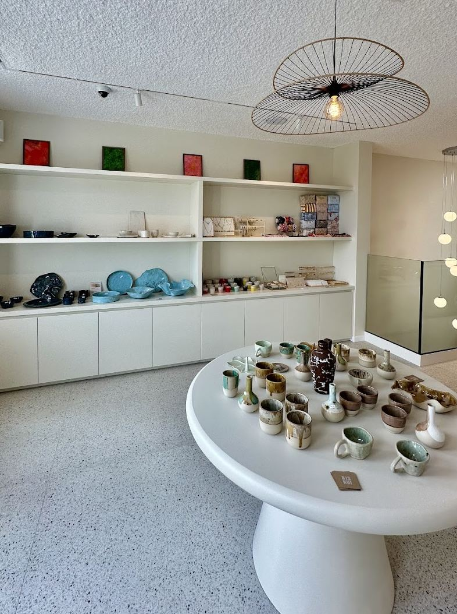

Cocci Brunch Store
Brunch gourmand et concept store à Waterloo, entre bons plats et jolis objets.
À propos
Chez Cocci, le brunch se déguste aussi bien à table qu'avec les yeux. Dans notre salle lumineuse et sur notre terrasse, on prend le temps : viennoiseries et pâtisseries maison, tartines généreuses, salades fraîches et boissons soignées, du mardi au dimanche.
Cocci, c'est aussi un concept store : entre deux bouchées, on flâne parmi une sélection de céramiques et d'objets faits main, pensée comme une boutique à part entière. Un lieu chaleureux où l'on vient pour un café et où l'on repart avec une nouvelle trouvaille.


Avis clients
Accueil chaleureux
Un service souriant et attentionné, à table comme en terrasse.
Plats généreux & frais
Des produits de qualité, préparés avec soin, dans l'assiette comme sur la photo.
Cadre lumineux
Un cadre soigné, entre salle boutique et terrasse verdoyante, parfait pour un brunch entre amis.
Horaires & Contact
| Lundi | Fermé |
|---|---|
| Mardi | 8h – 18h |
| Mercredi | 8h – 18h |
| Jeudi | 8h – 18h |
| Vendredi | 8h – 18h |
| Samedi | 9h – 18h |
| Dimanche | 9h – 18h |
1410 Waterloo, Belgique